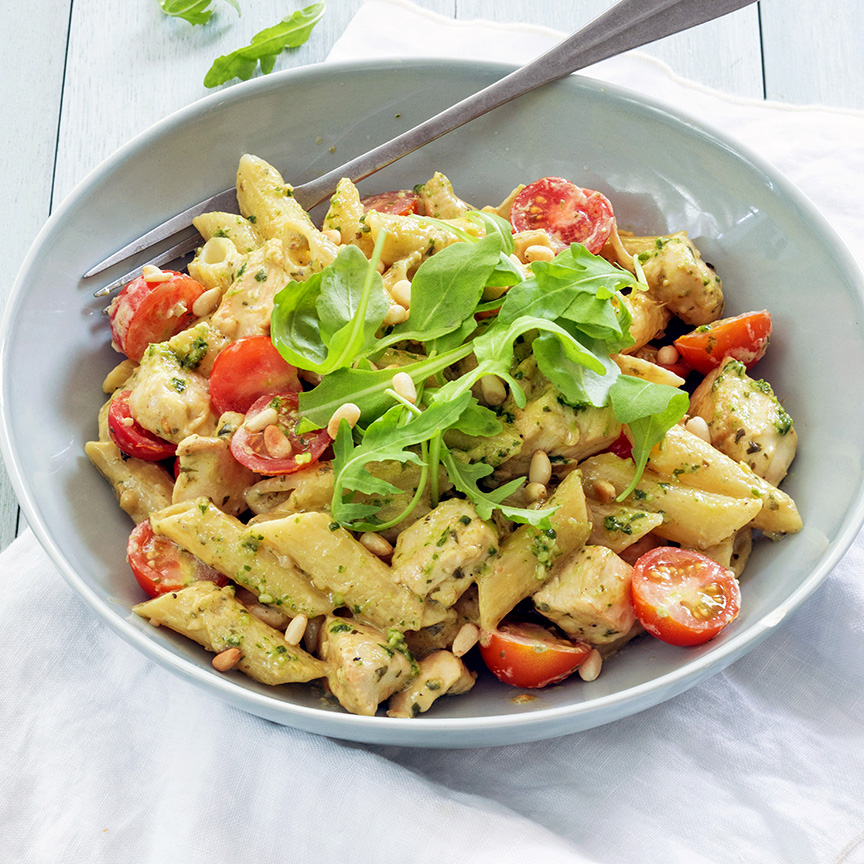

Pasta Pesto

De pasta pesto een gerecht afkomstig uit Italie
Ingredienten
2 personen
- 150 gr pasta
- 200 gr kipfilet (in stukjes)
- 0.5 ui
- 125 ml room
- 125 gr cherry tomaatjes
- peper en zout
- scheutje olijfolie
- 30 gr pijnboompitten (geroosterd)
- Handje rucola
- 2 eetlepels pesto (zelfgemaakte pesto of kant en klaar)
Stappen
- Snipper het uitje en fruit even aan in een scheutje olijfolie.
Voeg de blokjes kip toe en bak ongeveer 5 minuten.
Kook ondertussen de pasta gaar.
- Voeg de (zelfgemaakte) pesto en room toe aan de kip en roer goed door.
- Proef nog even of er nog peper of zout bij moet.
- Laat de pestosaus een paar minuutjes zachtjes pruttelen.
- dan de gekookte pasta toe en schep er doorheen.
- de tomaatjes en roer ook door de pasta pesto en verwarm nog een minuutje mee.
- Serveer de pasta pesto in de pan of op een bord met een handje rucola en de geroosterde pijnboompitten.
- Tip: deze pasta pesto is ook lekker met geraspte kaas.
Gebruik ook eens stukjes vegetarische kip voor een vegetarische variant op de kip pesto.